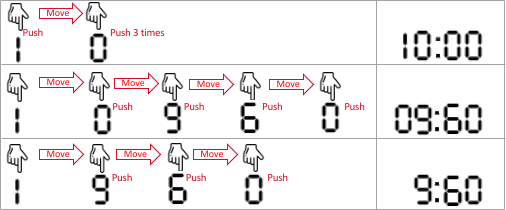

| Category | Difficulty | Likes | Dislikes |
|---|---|---|---|
| Algorithms | Medium | 236 | 645 |
google
A generic microwave supports cooking times for:
1 second.99 minutes and 99 seconds.To set the cooking time, you push at most four digits. The microwave normalizes what you push as four digits by prepending zeroes. It interprets the first two digits as the minutes and the last two digits as the seconds. It then adds them up as the cooking time. For example,
9 5 4 (three digits). It is normalized as 0954 and interpreted as 9 minutes and 54 seconds.0 0 0 8 (four digits). It is interpreted as 0 minutes and 8 seconds.8 0 9 0. It is interpreted as 80 minutes and 90 seconds.8 1 3 0. It is interpreted as 81 minutes and 30 seconds.You are given integers startAt, moveCost, pushCost, and targetSeconds. Initially, your finger is on the digit startAt. Moving the finger above any specific digit costs moveCost units of fatigue. Pushing the digit below the finger once costs pushCost units of fatigue.
There can be multiple ways to set the microwave to cook for targetSeconds seconds but you are interested in the way with the minimum cost.
Return the minimum cost to set targetSeconds seconds of cooking time.
Remember that one minute consists of 60 seconds.
Example 1:

Input: startAt = 1, moveCost = 2, pushCost = 1, targetSeconds = 600
Output: 6
Explanation: The following are the possible ways to set the cooking time.
- 1 0 0 0, interpreted as 10 minutes and 0 seconds.
The finger is already on digit 1, pushes 1 (with cost 1), moves to 0 (with cost 2), pushes 0 (with cost 1), pushes 0 (with cost 1), and pushes 0 (with cost 1).
The cost is: 1 + 2 + 1 + 1 + 1 = 6. This is the minimum cost.
- 0 9 6 0, interpreted as 9 minutes and 60 seconds. That is also 600 seconds.
The finger moves to 0 (with cost 2), pushes 0 (with cost 1), moves to 9 (with cost 2), pushes 9 (with cost 1), moves to 6 (with cost 2), pushes 6 (with cost 1), moves to 0 (with cost 2), and pushes 0 (with cost 1).
The cost is: 2 + 1 + 2 + 1 + 2 + 1 + 2 + 1 = 12.
- 9 6 0, normalized as 0960 and interpreted as 9 minutes and 60 seconds.
The finger moves to 9 (with cost 2), pushes 9 (with cost 1), moves to 6 (with cost 2), pushes 6 (with cost 1), moves to 0 (with cost 2), and pushes 0 (with cost 1).
The cost is: 2 + 1 + 2 + 1 + 2 + 1 = 9.Example 2:
Input: startAt = 0, moveCost = 1, pushCost = 2, targetSeconds = 76
Output: 6
Explanation: The optimal way is to push two digits: 7 6, interpreted as 76 seconds.
The finger moves to 7 (with cost 1), pushes 7 (with cost 2), moves to 6 (with cost 1), and pushes 6 (with cost 2). The total cost is: 1 + 2 + 1 + 2 = 6
Note other possible ways are 0076, 076, 0116, and 116, but none of them produces the minimum cost.
Constraints:
0 <= startAt <= 91 <= moveCost, pushCost <= 1051 <= targetSeconds <= 6039